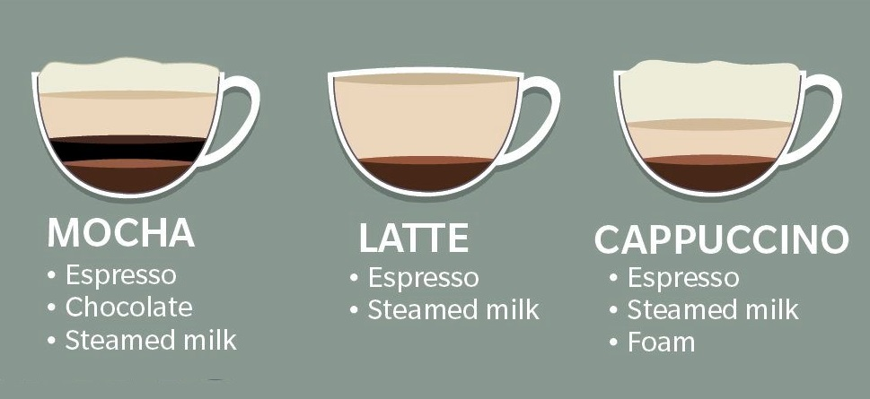
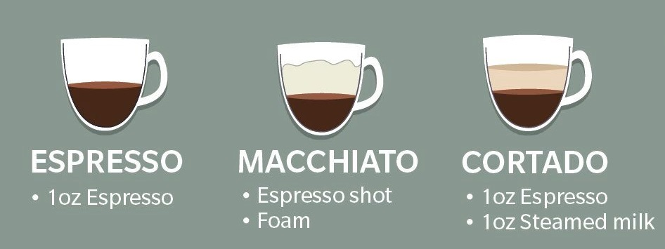
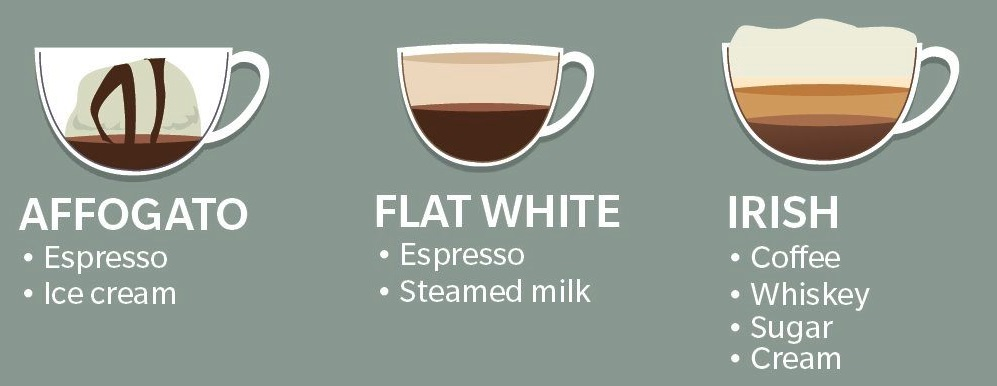
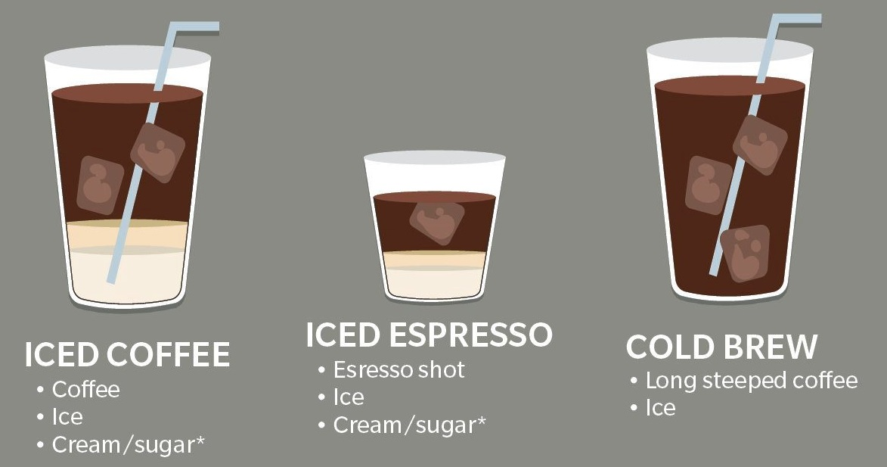
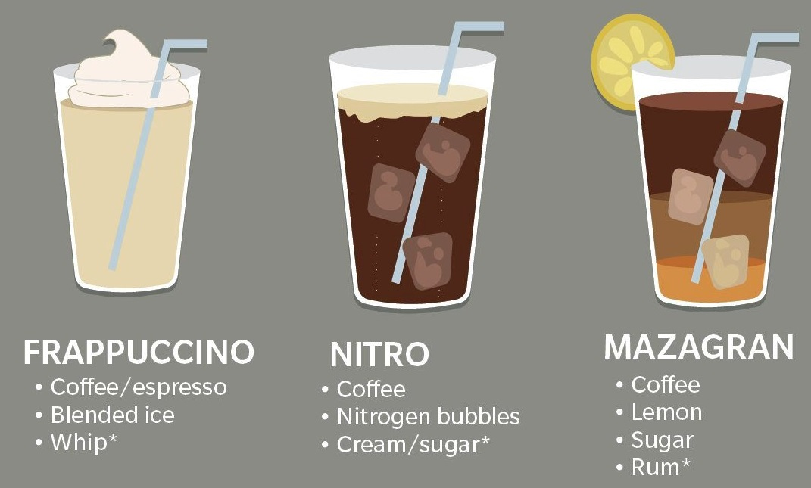

Coffee Cups
Coffee Home
Coffee Cups
Coffee Art
Let's have a look what are the main differences between the most popular coffees!





Want to know more differences between the coffees? Click here -->
Coffee Differences